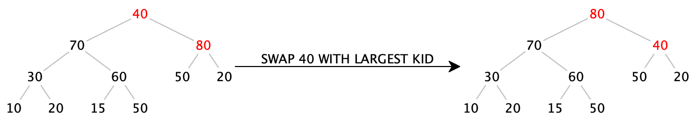

Lecture 29: Priority Queues and Heapsort
Introducing the priority queue structure; using a priority queue to conveniently implement a sorting algorithm
Motivation
In real life, we often encounter scenarios that involve queuing, such as standing in line at a grocery store or at the movies, or waiting for a haircut. In these “first come, first served” situations, the first person to arrive is the first person served. We can represent this kind of situation with a queue, where we add items to the back of the queue, and remove them from the front.
However, there are other scenarios where the first person to arrive is not the first person served: when boarding an airplane, even if you are the first on line, the first-class passengers will board before you. Or consider patients in an emergency room: if someone arrives early with a comparatively minor injury, and another patient arrives with a more serious problem, the second patient will be treated first. Here, the scenario is more of a “first come, most-important served” situation. How might we represent this data?
29.1 Priority Queues
Add an item, with a given priority, into the data structure
Remove the most important item from the data structure
Get the number of items in the data structure
In the rest of this lecture, we are going to make the following simplification: rather than focusing on adding an item paired with a priority, we are going to instead just consider adding a given priority. (We can add the item data as well if we just construct a custom IComparator object that ranks items based on priorities.) Further, we will choose to represent priorities simply as integers, though any type that can be sorted by a comparator will suffice.
Exercise
After completing this lecture, try adapting the data types here to store arbitrary data with priorities, instead of just priorities.
29.2 Using lists to implement priority queues: too slow
We might imagine that since a priority queue is “like a queue, but with priorities”, we should be able to implement it using a simple list or Deque<Integer>. We can indeed manage this: we just need to maintain our list in decreasing sorted order. Then the maximum value (i.e., the highest-priority item) will be the first item of the list, and so is readily available in constant (i.e. \(O(1)\)) time. But adding an item to a sorted list is expensive: in the worst case, we constantly add a low-priority item, and so for a priority queue already containing \(n\) elements, we would have to walk the entire list to find the right place to insert the item, which takes linear (i.e. \(O(n)\)) time.
Do Now!
Would using an ArrayList<Integer> instead of a Deque<Integer> or IList<Integer> be any more efficient?
Can we do better?
29.3 Choosing a better data structure for the task
Do Now!
Is there another data structure we have seen where accessing one particular value is extremely efficient (i.e., constant time), and accessing any item is still more efficient than \(O(n)\)?
One compelling possibility is to use a binary tree: accessing the root of the tree takes constant time, and accessing any item in the tree takes \(O(\mathit{depth\ of\ tree})\). But using an arbitrary binary tree is not enough: technically, the following tree is a binary tree:
Every level of the tree (except the first) contains two items, so this kind of tree of height \(h\) contains only \(2h\) items. Said another way, accessing item \(n\) takes \(n/2\) steps, or \(O(n)\) or linear time.
Do Now!
For a binary tree of height \(h\), what is the maximum number of nodes that can be present? Conversely, for a tree with \(n\) nodes, what is the minimum tree height needed to fit them all?
In fact, let’s elevate this goal to a definition: a full binary tree is a binary tree where every level (except possibly the last) is completely full, and the last level of the tree is filled from left to right. Accordingly:
We can now successfully access any item in the tree in logarithmic time, and the root of the tree in constant time. Now if only we can ensure that the root of the tree always contains the maximum value, we’d be very nearly done! How can we do that?
29.4 Heaps and invariants
Every value in the left subtree of a node must be less than or equal to the value at the node,
Every value in the right subtree of a node must be greater than or equal to the value at the node, and
Both the left and right subtrees must themselves be valid binary search trees.
Every value in the both the left and right subtrees of a node must be less than or equal to the value at the node, and
Both the left and right subtrees must themselves be valid heaps.
In particular, the left tree is a valid heap, even though the values in the lowest level are not sorted —
We now have two different invariants: a structural one (fullness) that ensures our trees will be conveniently short, and a logical one (heap-ordering) that ensures the values are ordered conveniently for our purposes. How can we exploit this?
29.5 Designing a priority queue
Let’s now figure out how to define the operations add and removeMax. (In the next section, we’ll see how to represent this design and implement it conveniently.) We’ll start by asserting that our priority queue will be represented by a heap, that is, a full binary tree that obeys the heap-ordering property. Here is an example of a valid heap:

Do Now!
Confirm that this tree is full and that it obeys the heap-ordering property.
29.5.1 Adding items to a heap
Let’s try to add 70 to this heap. Where should we add it? We have to ensure that we preserve both invariants, but no matter where we put 70, it looks like we’ll violate at least one of them: if we add it next to the 15, then it violates the heap-ordering property (because it is greater than its parent), and if we add it anywhere else, we violate the fullness property. What to do?
Do Now!
If we add 70 next to the 15, what should we do to restore the heap-ordering property?
Insert the 70 in the next available space, to preserve the fullness property:
Notice that 70, on its own, is a valid heap. But unfortunately, since 70 is greater than 50, the subtree starting at 50 is not. But we can fix that, if we just swap the two values:
Now the subtree starting at 70 is a valid heap. Progress!
We just ensured that the subtree starting at 70 is a valid heap, but since 70 is greater than 60, the subtree starting at 60 is not. But we can fix that, by swapping again:
Again, the subtree starting at 70 is a valid heap. More progress!
We just ensured that the subtree starting at 70 is a valid heap. And in fact, since 70 is less than 80, the entire tree is now a valid heap again. Done!
Insert the item in the next available space, maintaining the fullness property.
While the item is greater than its parent, swap it with its parent. (This step is often known as the “upheap” operation.)
Do Now!
Insert 90 into the final heap above.
Insert 90 into the next available space:
While 90 is greater than its parent, swap it with its parent:
We now have a procedure that seems to work to insert an item into a heap. Does it always work, and does it always terminate? We know that it preserves the fullness property, because by construction, we always insert the item into the next available location. And the whole point of swapping the item with its parent is to restore the heap-ordering property. Further, every time we swap the inserted item with its parent, we get closer and closer to the root, so eventually we must reach the root and terminate. At that point, we have preserved the fullness property and restored the heap-ordering property, so this does work in all cases.
Next, how efficient is it? Assuming we can easily (as in, constant-time) find the next available spot to insert the item,
the fullness property ensures that our tree has height \(O(\log_2 n)\), so the upheap operation takes at most \(O(\log_2 n)\)
time. Therefore, our insertion operation happens in logarithmic time —
29.5.2 Removing the maximum item from a heap
The maximum item of the heap is easily available: it’s sitting right at the root. If we just blindly “remove” the root, we have a hole in our tree, which breaks the tree in half. How can we fix this? It’s tempting to try to “undo” the upheap operation, but it’s much harder to figure out how to (efficiently) get from the root to the end of the tree than it is to figure out how to get from the end of the tree to the root. (Without examining the entirety of the tree, there’s no way to know whether to swap the root downwards to the right or to the left.)
Remove 90 from the root:
We can try simply moving the last item in the tree up into the root, which will ensure the fullness property stays true, but violates the heap-ordering property:
Notice that every node in this tree obeys the heap-ordering property except for the root itself. If we swap the 40 with one of its kids, we can push the problem down a level. We have to choose the larger of the two children, or else we’d create another heap-ordering violation: 
Again, every node in this tree obeys the heap-ordering property except for the node containing 40 itself. So again, we swap it with its largest child:
Now 40 is a leaf, so there is no more heap-ordering violation. Done!
Remove the root, and replace it with the last leaf of the tree, maintaining the fullness property.
While the item is greater than either of its children, swap it with the largest of its children. (This step is often known as the “downheap” operation.)
Do Now!
Remove the next maximum value from the heap above.
Remove the root, and replace it with the last leaf of the tree:

While 50 is greater than either of its children, swap it with the largest of its children.
Again we have to ask, does this procedure always work, and how efficient is it? Since we replace the root with the last item, we preserve the fullness property by construction. And the whole point of the downheap operation is to restore the heap-ordering property. Since every time we swap the item downward, we come closer to the leaves of the tree, we can only swap a finite number of times before terminating.
Again assuming we can find the last item efficiently, moving it to the root takes constant time, and the downheap operation runs in time proportional to the height of the tree, which, thanks to the fullness property, is logarithmic in the size of tree. Perfect.
29.6 Implementing a priority queue
Now we come to the clever implementation trick that makes heaps so efficient to implement. Let’s index each of the nodes in our tree, starting at the root and moving left to right in each level. Here, the indices of each node are shown colored and in brackets:
Do Now!
Find a formula to compute the index of the left child of a node given the index of a node. Find a similar formula to compute the index of the right child of a node given the index of a node. Finally, find a formula to compute the index of the parent of a node given the index of a node.
\(leftChild(idx) = 2 * idx + 1\)
\(rightChild(idx) = 2 * idx + 2\)
\(parent(idx) = floor((idx - 1) / 2)\)
Let’s represent the tree above as an ArrayList<Integer>. The root will be at index 0, and the children of each node will be at their appropriate indices. Now we can see why the fullness property insists that the last layer of the tree be filled from left to right: a full tree containing \(n\) nodes will simply be stored in indices \(0\) through \(n-1\) of an ArrayList, with no gaps! And even better, we now can see that finding the next available location in the tree is trivial: it’s simply the next index in the ArrayList.
So our initial heap example,
Index: 0 1 2 3 4 5 6 7 8 9 Data: [ 80 | 60 | 50 | 30 | 50 | 40 | 20 | 10 | 20 | 15 ]
- Inserting 70:
0 1 2 3 4 5 6 7 8 9 [ 80 | 60 | 50 | 30 | 50 | 40 | 20 | 10 | 20 | 15 ] ===Add 70 to end of ArrayList===> 0 1 2 3 4 5 6 7 8 9 10 [ 80 | 60 | 50 | 30 | 50 | 40 | 20 | 10 | 20 | 15 | 70 ] ===Swap 70 (at index 10) with parent (at index (10-1)/2 = 4)==> 0 1 2 3 4 5 6 7 8 9 10 [ 80 | 60 | 50 | 30 | 70 | 40 | 20 | 10 | 20 | 15 | 50 ] ===Swap 70 (at index 4) with parent (at index (4-1)/2 = 1)===> 0 1 2 3 4 5 6 7 8 9 10 [ 80 | 70 | 50 | 30 | 60 | 40 | 20 | 10 | 20 | 15 | 50 ] - Inserting 90:
0 1 2 3 4 5 6 7 8 9 10 [ 80 | 70 | 50 | 30 | 60 | 40 | 20 | 10 | 20 | 15 | 50 ] ===Add 90 to end of ArrayList===> 0 1 2 3 4 5 6 7 8 9 10 11 [ 80 | 70 | 50 | 30 | 60 | 40 | 20 | 10 | 20 | 15 | 50 | 90 ] ===Swap 90 (at index 11) with parent (at index (11-1)/2 = 5)==> 0 1 2 3 4 5 6 7 8 9 10 11 [ 80 | 70 | 50 | 30 | 60 | 90 | 20 | 10 | 20 | 15 | 50 | 40 ] ===Swap 90 (at index 5) with parent (at index (5-1)/2 = 2)===> 0 1 2 3 4 5 6 7 8 9 10 11 [ 80 | 70 | 90 | 30 | 60 | 50 | 20 | 10 | 20 | 15 | 50 | 40 ] ===Swap 90 (at index 2) with parent (at index (2-1)/2 = 0)===> 0 1 2 3 4 5 6 7 8 9 10 11 [ 90 | 70 | 80 | 30 | 60 | 50 | 20 | 10 | 20 | 15 | 50 | 40 ]
Do Now!
Confirm that these operations correspond exactly to the tree diagrams above.
- Removing maximum:
0 1 2 3 4 5 6 7 8 9 10 11 [ 90 | 70 | 80 | 30 | 60 | 50 | 20 | 10 | 20 | 15 | 50 | 40 ] ===Swap root item with last item in heap===> 0 1 2 3 4 5 6 7 8 9 10 ||| 11 [ 40 | 70 | 80 | 30 | 60 | 50 | 20 | 10 | 20 | 15 | 50 ||| 90 ] ===Swap 40 (at index 0) with larger of children (indices 1 and 2)===> 0 1 2 3 4 5 6 7 8 9 10 ||| 11 [ 80 | 70 | 40 | 30 | 60 | 50 | 20 | 10 | 20 | 15 | 50 ||| 90 ] ===Swap 40 (at index 2) with larger of children (indices 5 and 6)===> 0 1 2 3 4 5 6 7 8 9 10 ||| 11 [ 80 | 70 | 50 | 30 | 60 | 40 | 20 | 10 | 20 | 15 | 50 ||| 90 ]Notice that even though index 5’s left child should be at index 11, we have to remember that we’ve removed 90 from the heap, so index 11 is no longer part of our heap (which we denote with extra vertical bars). - Removing maximum:
0 1 2 3 4 5 6 7 8 9 10 ||| 11 [ 80 | 70 | 50 | 30 | 60 | 40 | 20 | 10 | 20 | 15 | 50 ||| 90 ] ===Swap root item with last item in heap===> 0 1 2 3 4 5 6 7 8 9 ||| 10 11 [ 50 | 70 | 50 | 30 | 60 | 40 | 20 | 10 | 20 | 15 ||| 80 | 90 ] ===Swap 50 (at index 0) with larger of children (indices 1 and 2)===> 0 1 2 3 4 5 6 7 8 9 ||| 10 11 [ 70 | 50 | 50 | 30 | 60 | 40 | 20 | 10 | 20 | 15 ||| 80 | 90 ] ===Swap 50 (at index 1) with larger of children (indices 3 and 4)===> 0 1 2 3 4 5 6 7 8 9 ||| 10 11 [ 70 | 60 | 50 | 30 | 50 | 40 | 20 | 10 | 20 | 15 ||| 80 | 90 ] ===Swap 50 (at index 4) with larger of children (index 9)===> 0 1 2 3 4 5 6 7 8 9 ||| 10 11 [ 70 | 60 | 50 | 30 | 50 | 40 | 20 | 10 | 20 | 15 ||| 80 | 90 ] - Let’s remove the maximum one more time, just for practice:
0 1 2 3 4 5 6 7 8 9 ||| 10 11 [ 70 | 60 | 50 | 30 | 50 | 40 | 20 | 10 | 20 | 15 ||| 80 | 90 ] ===Swap root item with last item in heap===> 0 1 2 3 4 5 6 7 8 ||| 9 10 11 [ 15 | 60 | 50 | 30 | 50 | 40 | 20 | 10 | 20 ||| 70 | 80 | 90 ] ===Swap 15 (at index 0) with larger of children (indices 1 and 2)===> 0 1 2 3 4 5 6 7 8 ||| 9 10 11 [ 60 | 15 | 50 | 30 | 50 | 40 | 20 | 10 | 20 ||| 70 | 80 | 90 ] ===Swap 15 (at index 1) with larger of children (indices 3 and 4)===> 0 1 2 3 4 5 6 7 8 ||| 9 10 11 [ 60 | 50 | 50 | 30 | 15 | 40 | 20 | 10 | 20 ||| 70 | 80 | 90 ]
Do Now!
What’s accumulating in the tail of the ArrayList, after each removal?
29.7 Heapsort
To heapsort a list: |
Build a heap from all the items in the list. |
Remove all the items from the heap. |
To build a heap from an ArrayList: |
For each i from 1 to the size of the ArrayList, |
upheap(i) |
To upheap at index idx: |
Let parentIdx = floor((idx - 1) / 2) |
If the item at index idx is greater than the item at index parentIdx: |
Swap items at indices idx and parentIdx |
upheap(parentIdx) |
To remove the maximum item: |
Swap the item at index 0 with the item at the index of the last heap item |
downheap(0) |
To downheap at index idx: |
Let leftIdx = 2 * idx + 1 |
Let rightIdx = 2 * idx + 2 |
If the item at index idx is less than either of the items at leftIdx or rightIdx: |
Let biggestIdx = index of the largest of the items at leftIdx or rightIdx |
Swap items at indices idx and biggestIdx |
downheap(biggestIdx) |
How efficient is heapsort? Building the heap inserts \(n\) items, and each insertion costs \(O(\log_2 n)\) work, so building takes \(O(n\log_2 n)\). Removing all the items removes \(n\) items, and each removal costs \(O(\log_2 n)\) work, so all the removals together take \(O(n\log_2 n)\) work also...so the entire algorithm takes \(O(n\log_2 n)\) work. Notice that unlike quicksort, there is no bad worst-case behavior, and unlike merge-sort, there’s no need for any additional storage. Heapsort is an efficient, in-place sorting algorithm.
Exercise
Implement all the algorithms sketched above in Java.
To build a heap from an ArrayList: |
For each i from the (size of the array list - 1) / 2 down to 0, |
downheap(i) |
Exercise
Try working through both versions of buildHeap, using the data [1, 2, 3, 4, 5, 6, 7, 8, 9]. Do you wind up with the same heaps? If not, do you nevertheless wind up with two valid heaps?
Exercise
Try finishing the heapsort algorithm on the two heaps you just obtained.
Exercise
Try working through heapsort on the data [9, 8, 7, 6, 5, 4, 3, 2, 1]. (Hint: buildHeap should be particularly easy!)